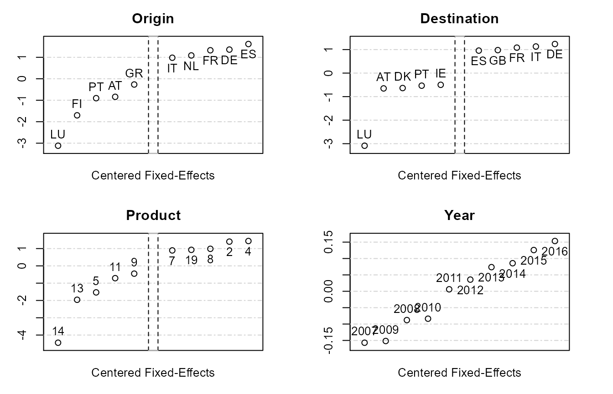
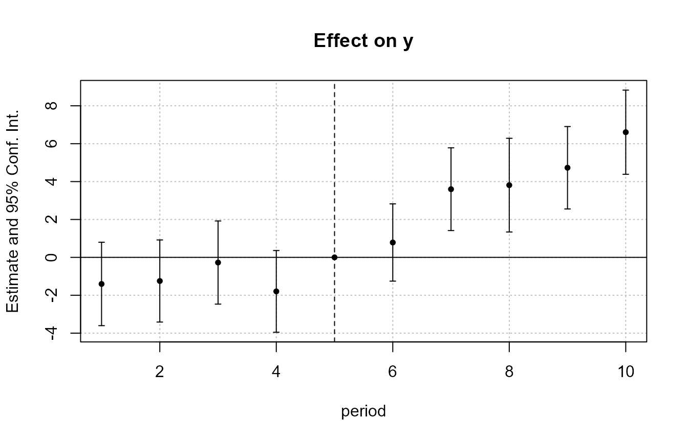
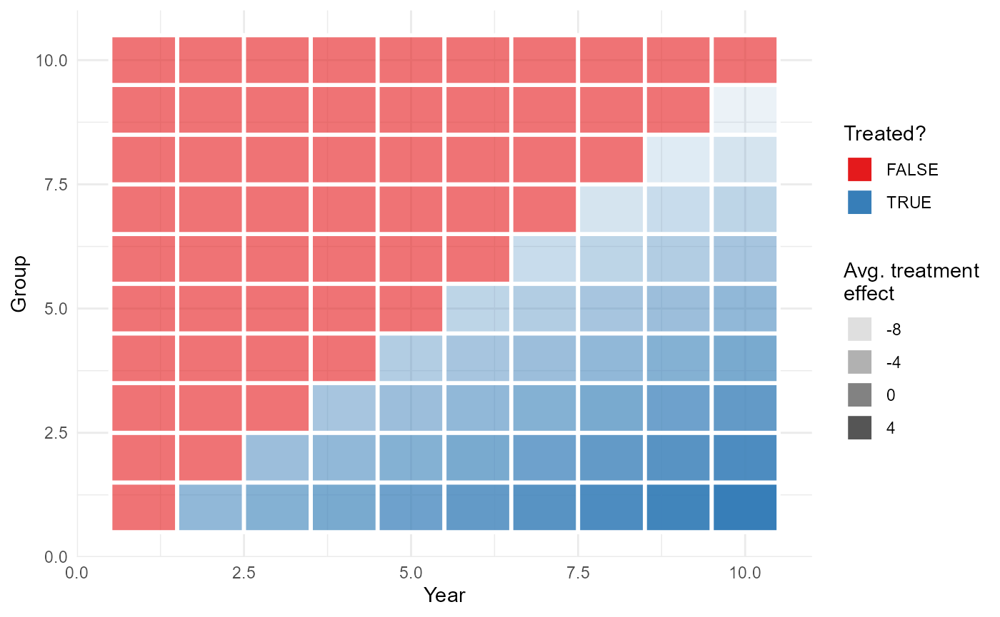
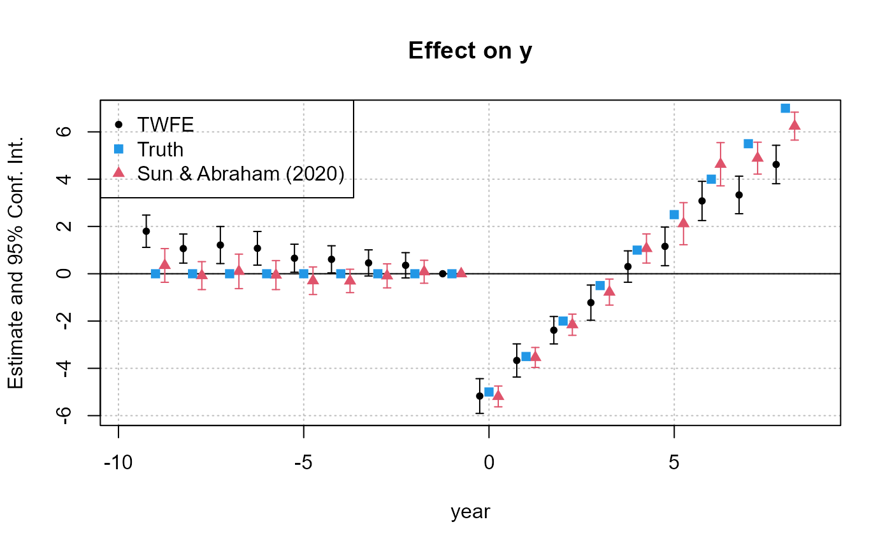

vignettes/fixest_walkthrough.Rmd
fixest_walkthrough.RmdThe package fixest provides a family of functions to perform estimations with multiple fixed-effects. The two main functions are feols for linear models and feglm for generalized linear models. In addition, the function femlm performs direct maximum likelihood estimation, and feNmlm extends the latter to allow the inclusion of non-linear in parameters right-hand-sides. Finally, the functions fepois and fenegbin are aliases for Poisson and negative binomial fixed-effect estimations. Each of these functions supports any number of fixed-effects and is implemented with full fledged multi-threading in C++. Functions feols and feglm further support variables with varying slopes.
This package is currently (Feb. 2020) the fastest software available to perform fixed-effects estimations. See the project’s homepage for a set of benchmarks.
The standard-errors of the estimates can be easily and intuitively clustered (up to four-way).
The function etable allows to seamlessly export the results of multiple estimations into either a data.frame, or into a Latex table.
The main features of the package are illustrated in this vignette. The theory used to obtain the fixed-effects is based on Berge (2018), “Efficient estimation of maximum likelihood models with multiple fixed-effects: the R package FENmlm.” CREA Discussion Papers, 13.
This example deals with international trade, which is a setup that usually requires performing estimations with many fixed-effects. We estimate a very simple gravity model in which we are interested in finding out the negative effect of geographic distance on trade. The sample data consists of European trade extracted from Eurostat. Let’s load the data contained in the package:
This data is a sample of bilateral importations between EU15 countries from 2007 and 2016. The data is further broken down according to 20 product categories. Here is a sample of the data:
| Destination | Origin | Product | Year | dist_km | Euros |
|---|---|---|---|---|---|
| LU | BE | 1 | 2007 | 139.5719 | 2966697 |
| BE | LU | 1 | 2007 | 139.5719 | 6755030 |
| LU | BE | 2 | 2007 | 139.5719 | 57078782 |
| BE | LU | 2 | 2007 | 139.5719 | 7117406 |
| LU | BE | 3 | 2007 | 139.5719 | 17379821 |
| BE | LU | 3 | 2007 | 139.5719 | 2622254 |
The dependent variable of the estimation will be the level of trade between two countries while the independent variable is the geographic distance between the two countries. To obtain the elasticity of geographic distance net of the effects of the four fixed-effects, we estimate the following:
\(E\left(Trade_{i,j,p,t}\right)=\gamma_{i}^{Exporter}\times\gamma_{j}^{Importer}\times\gamma_{p}^{Product}\times\gamma_{t}^{Year}\times Distance_{ij}^{\beta}\),
where the subscripts \(i\), \(j\), \(p\) and \(t\) stand respectively for the exporting country, the importing country, the type of product and the year, and the \(\gamma_{v}^{c}\) are fixed-effects for these groups. Here \(\beta\) is the elasticity of interest.
Note that when you use the Poisson/Negative Binomial families, this relationship is in fact linear because the right hand side is exponentialized to avoid negative values for the Poisson parameter. This leads to the equivalent relation:1
\(E\left(Trade_{i,j,p,t}\right)=\exp\left(\gamma_{i}^{Exporter}+\gamma_{j}^{Importer}+\gamma_{p}^{Product}+\gamma_{t}^{Year}+\beta\times \ln Distance_{ij}\right)\).
The estimation of this model using a Poisson likelihood is as follows:
The function fepois is actually an alias to the function feglm with family = poisson. The results can be shown directly with the print method:
print(gravity_pois)
#> Poisson estimation, Dep. Var.: Euros
#> Observations: 38,325
#> Fixed-effects: Origin: 15, Destination: 15, Product: 20, Year: 10
#> Standard-errors: Clustered (Origin)
#> Estimate Std. Error t value Pr(>|t|)
#> log(dist_km) -1.52787 0.115678 -13.208 < 2.2e-16 ***
#> ---
#> Signif. codes: 0 '***' 0.001 '**' 0.01 '*' 0.05 '.' 0.1 ' ' 1
#> Log-Likelihood: -7.025e+11 Adj. Pseudo R2: 0.764032
#> BIC: 1.405e+12 Squared Cor.: 0.612021The print reports the coefficient estimates and standard-errors as well as some other information. Among the quality of fit information, the squared-correlation corresponds to the correlation between the dependent variable and the expected predictor; it reflects somehow the idea of R-square in OLS estimations. Note that the estimation is performed using parallel computing which you can control using the argument nthreads (see the “multi-threading” section for more details).
To cluster the standard-errors, we can simply use the argument vcov of the summary method. Let’s say we want to cluster the standard-errors according to the first two fixed-effects (i.e. the Origin and Destination variables). Then we just have to do:
summary(gravity_pois, vcov = "twoway")
#> Poisson estimation, Dep. Var.: Euros
#> Observations: 38,325
#> Fixed-effects: Origin: 15, Destination: 15, Product: 20, Year: 10
#> Standard-errors: Clustered (Origin & Destination)
#> Estimate Std. Error t value Pr(>|t|)
#> log(dist_km) -1.52787 0.130734 -11.6869 < 2.2e-16 ***
#> ---
#> Signif. codes: 0 '***' 0.001 '**' 0.01 '*' 0.05 '.' 0.1 ' ' 1
#> Log-Likelihood: -7.025e+11 Adj. Pseudo R2: 0.764032
#> BIC: 1.405e+12 Squared Cor.: 0.612021The clustering can be done on one, two, three or up to four variables. If the estimation includes fixed-effects, then by default the clustering will be done using these fixed-effects, in the original order. This is why the Origin and Destination variables were used for the two-way clustering in the previous example. If, instead, you wanted to perform one-way clustering on the Product variable, you need to provide it in a formula or use the argument cluster:
# Three ways to summon clustering on the Product variable
summary(gravity_pois, vcov = ~Product)
summary(gravity_pois, cluster = "Product")
summary(gravity_pois, cluster = ~Product)Both produce the same results:
summary(gravity_pois, cluster = ~Product)
#> Poisson estimation, Dep. Var.: Euros
#> Observations: 38,325
#> Fixed-effects: Origin: 15, Destination: 15, Product: 20, Year: 10
#> Standard-errors: Clustered (Product)
#> Estimate Std. Error t value Pr(>|t|)
#> log(dist_km) -1.52787 0.098294 -15.544 < 2.2e-16 ***
#> ---
#> Signif. codes: 0 '***' 0.001 '**' 0.01 '*' 0.05 '.' 0.1 ' ' 1
#> Log-Likelihood: -7.025e+11 Adj. Pseudo R2: 0.764032
#> BIC: 1.405e+12 Squared Cor.: 0.612021Note that you can always cluster the standard-errors, even when the estimation contained no fixed-effect:
gravity_simple = fepois(Euros ~ log(dist_km), trade)
# We use a formula to specify the variables used for two way clustering
# (note that the values of the variables are fetched directly in the original database)
summary(gravity_simple, ~Origin + Destination)
#> Poisson estimation, Dep. Var.: Euros
#> Observations: 38,325
#> Standard-errors: Clustered (Origin & Destination)
#> Estimate Std. Error t value Pr(>|t|)
#> (Intercept) 24.70889 1.124768 21.96798 < 2.2e-16 ***
#> log(dist_km) -1.02896 0.158022 -6.51145 7.4429e-11 ***
#> ---
#> Signif. codes: 0 '***' 0.001 '**' 0.01 '*' 0.05 '.' 0.1 ' ' 1
#> Log-Likelihood: -2.426e+12 Adj. Pseudo R2: 0.185023
#> BIC: 4.852e+12 Squared Cor.: 0.055107Finally, the standard-errors can also be computed at estimation time, you simply need to add the vcov argument:
fepois(Euros ~ log(dist_km), trade, vcov = ~Product)
#> Poisson estimation, Dep. Var.: Euros
#> Observations: 38,325
#> Standard-errors: Clustered (Product)
#> Estimate Std. Error t value Pr(>|t|)
#> (Intercept) 24.70889 0.330044 74.8654 < 2.2e-16 ***
#> log(dist_km) -1.02896 0.045954 -22.3909 < 2.2e-16 ***
#> ---
#> Signif. codes: 0 '***' 0.001 '**' 0.01 '*' 0.05 '.' 0.1 ' ' 1
#> Log-Likelihood: -2.426e+12 Adj. Pseudo R2: 0.185023
#> BIC: 4.852e+12 Squared Cor.: 0.055107Talking about standard-errors… there are more than clustered standard-errors that can be computed… and there are many ways to achieve the same thing… and many shortcuts to know. So before you leave don’t forget to have a look at the section describing how to use the vcov argument!
Now we estimate the same relationship by OLS. We need to put the left hand side in logarithm (since the right-hand-side is not exponentialized):
Of course you can use different families in feglm, exactly as in glm.
To get the estimation for the fixed-effects Negative Binomial:
Now let’s say that we want a compact overview of the results of several estimations. The best way is to use the function etable. This function summarizes the results of several fixest estimations into a data.frame. To see the fixed-effects results with the three different likelihoods, we just have to type:
etable(gravity_pois, gravity_negbin, gravity_ols,
vcov = "twoway", headers = c("Poisson", "Negative Binomial", "Gaussian"))| gravity_pois | gravity_negbin | gravity_ols | |
|---|---|---|---|
| Poisson | Negative Binomial | Gaussian | |
| log(dist_km) | -1.528*** (0.1307) | -1.711*** (0.1773) | -2.170*** (0.1714) |
| Fixed-Effects: | —————— | —————— | —————— |
| Origin | Yes | Yes | Yes |
| Destination | Yes | Yes | Yes |
| Product | Yes | Yes | Yes |
| Year | Yes | Yes | Yes |
| _______________ | __________________ | __________________ | __________________ |
| Family | Poisson | Neg. Bin. | OLS |
| S.E.: Clustered | by: Orig. & Dest. | by: Orig. & Dest. | by: Orig. & Dest. |
| Observations | 38,325 | 38,325 | 38,325 |
| Squared Cor. | 0.61202 | 0.43760 | 0.70558 |
| Pseudo R2 | 0.76403 | 0.03473 | 0.23640 |
| BIC | 1.4e+12 | 1,293,786.1 | 151,977.2 |
| Over-dispersion | – | 0.54877 | – |
We added the argument vcov="twoway" to cluster the standard-errors for all estimations. As can be seen this function gives an overview of the estimates and standard-errors, as well as some quality of fit measures. The argument headers is used to add information on each estimation column.
In the previous example, we directly added the estimation results as arguments of the function etable. But the function also accepts lists of estimations. Let’s give an example. Say you want to see the influence of the introduction of fixed-effects on the estimate of the elasticity of distance. You can do it with the following code where we use the argument fixef to include fixed-effects (instead of inserting them directly in the formula):
gravity_subfe = list()
all_FEs = c("Year", "Destination", "Origin")
for(i in 0:3){
gravity_subfe[[i+1]] = fepois(Euros ~ log(dist_km), trade, fixef = all_FEs[0:i])
}The previous code performs 4 estimations with an increasing number of fixed-effects and store their results into the list named gravity_subfe. To show the results of all 4 estimations, it’s easy:
etable(gravity_subfe, cluster = ~Origin+Destination)| model 1 | model 2 | model 3 | model 4 | |
|---|---|---|---|---|
| Dependent Var.: | Euros | Euros | Euros | Euros |
| (Intercept) | 24.71*** (1.125) | |||
| log(dist_km) | -1.029*** (0.1580) | -1.029*** (0.1581) | -1.226*** (0.2045) | -1.518*** (0.1282) |
| Fixed-Effects: | —————— | —————— | —————— | —————— |
| Year | No | Yes | Yes | Yes |
| Destination | No | No | Yes | Yes |
| Origin | No | No | No | Yes |
| _______________ | __________________ | __________________ | __________________ | __________________ |
| S.E.: Clustered | by: Orig. & Dest. | by: Orig. & Dest. | by: Orig. & Dest. | by: Orig. & Dest. |
| Observations | 38,325 | 38,325 | 38,325 | 38,325 |
| Squared Cor. | 0.05511 | 0.05711 | 0.16420 | 0.38479 |
| Pseudo R2 | 0.18502 | 0.18833 | 0.35826 | 0.59312 |
| BIC | 4.85e+12 | 4.83e+12 | 3.82e+12 | 2.42e+12 |
We have a view of the 4 estimations, all reporting two-way clustered standard-errors thanks to the use of the argument cluster.
Note that since version 0.8.0, multiple estimations can be performed at once without requiring loops. Let’s replicate the previous example using fixest stepwise functions:
The previous line of code performs 4 estimations. The function csw0 is the key here, it means: cumulative stepwise starting with the empty element. Starting with the empty element, each new estimation adds a new element in the csw0() function, quite like the previous loop. Then you can consider the results, here res_multi, as a list of results, although with specific methods to easily access each element.
Stepwise functions can be applied to the linear right-hand-side and to the fixed-effects, you can also have multiple dependent variables and perform split sample estimations with the argument split. All of this is detailed in the dedicated vignette: Multiple estimations.
So far we have seen how to report the results of multiple estimations on the R console. Now, using the same function etable, we can also export the results to high quality Latex tables. We just need to provide the argument tex = TRUE:
# with two-way clustered SEs
etable(res_multi, cluster = ~Origin+Destination, tex = TRUE)
#> \begingroup
#> \centering
#> \begin{tabular}{lcccc}
#> \tabularnewline \midrule \midrule
#> Dependent Variable: & \multicolumn{4}{c}{Euros}\\
#> Model: & (1) & (2) & (3) & (4)\\
#> \midrule
#> \emph{Variables}\\
#> (Intercept) & 24.71$^{***}$ & & & \\
#> & (1.125) & & & \\
#> log(dist\_km) & -1.029$^{***}$ & -1.029$^{***}$ & -1.226$^{***}$ & -1.518$^{***}$\\
#> & (0.1580) & (0.1581) & (0.2045) & (0.1282)\\
#> \midrule
#> \emph{Fixed-effects}\\
#> Year & & Yes & Yes & Yes\\
#> Destination & & & Yes & Yes\\
#> Origin & & & & Yes\\
#> \midrule
#> \emph{Fit statistics}\\
#> Observations & 38,325 & 38,325 & 38,325 & 38,325\\
#> Squared Correlation & 0.05511 & 0.05711 & 0.16420 & 0.38479\\
#> Pseudo R$^2$ & 0.18502 & 0.18833 & 0.35826 & 0.59312\\
#> BIC & $4.85\times 10^{12}$ & $4.83\times 10^{12}$ & $3.82\times 10^{12}$ & $2.42\times 10^{12}$\\
#> \midrule \midrule
#> \multicolumn{5}{l}{\emph{Clustered (Origin \& Destination) standard-errors in parentheses}}\\
#> \multicolumn{5}{l}{\emph{Signif. Codes: ***: 0.01, **: 0.05, *: 0.1}}\\
#> \end{tabular}
#> \par\endgroupThe user can export the Latex table directly into a file (argument file), add a title (arg. title) and a label to the table (arg. label). Note that when the argument file is present, the Latex format becomes the default (i.e. tex = TRUE by default).
The coefficients can be renamed easily (arg. dict), some can be dropped (arg. drop) and they can be easily reordered with regular expressions (arg. order).
The significance codes can easily be changed (arg. signifCode) and all quality of fit information can be customized (argument fitstat). Among others, the number of fixed-effect per fixed-effect dimension can also be displayed using the argument fixef_sizes.
Consider the following example of the exportation of two tables:
# we set the dictionary once and for all
myDict = c("log(dist_km)" = "$\\ln (Distance)$", "(Intercept)" = "Constant")
# 1st export: we change the signif code and drop the intercept
etable(res_multi, signifCode = c("a" = 0.01, "b" = 0.05),
drop = "Const", dict = myDict, file = "Estimation Tables.tex",
replace = TRUE, title = "First export -- normal Standard-errors")
# 2nd export: clustered S-E + distance as the first coefficient
etable(res_multi, cluster = ~Product, order = "Dist",
dict = myDict, file = "Estimation Tables.tex",
title = "Second export -- clustered standard-errors (on Product variable)")In this example, two tables containing the results of the 4 estimations are directly exported to a Latex table into the file “Estimation Tables.tex”. First take notice (again) that we do not need to use the argument tex=TRUE since when the argument file is present, the Latex format becomes the default. The file is re-created in the first exportation thanks to the argument replace = TRUE.
To change the variable names in the Latex table, we use the argument dict. The variable myDict is the dictionary we use to rename the variables, it is simply a named vector. The original name of the variables correspond to the names of myDict while the new names of the variables are the values of this vector. Any variable that matches the names of myDict will be replaced by its value. Thus we do not care of the order of appearance of the variables in the estimation results.
In the first export, the coefficient of the intercept is dropped by using drop = "Const" (could be anything such that grepl(drop[1], "Constant") is TRUE). In the second, the coefficient of the distance is put before the intercept (which is kept) thanks to the argument order. Note that the actions performed by the arguments drop or order are performed after the renaming takes place with the argument dict.
Note that you can completely customize the style of the table by using the style and postprocessing arguments, please have a look at the dedicated vignette: Exporting estimation tables.
To obtain the fixed-effects of the estimation, the function fixef must be performed on the results. This function returns a list containing the fixed-effects coefficients for each dimension. The summary method helps to have a quick overview:
fixedEffects = fixef(gravity_pois)
summary(fixedEffects)
#> Fixed_effects coefficients
#> Origin Destination Product Year
#> Number of fixed-effects 15 15 20 10
#> Number of references 0 1 1 1
#> Mean 23.3 3.09 0.0129 0.157
#> Standard-deviation 1.28 1.11 1.36 0.113
#>
#> COEFFICIENTS:
#> Origin: AT BE DE DK ES
#> 22.51 23.56 24.71 23.44 24.97 ... 10 remaining
#> -----
#> Destination: AT BE DE DK ES
#> 2.436 2.696 4.323 2.451 4.043 ... 10 remaining
#> -----
#> Product: 1 2 3 4 5
#> 0 1.414 0.6562 1.449 -1.521 ... 15 remaining
#> -----
#> Year: 2007 2008 2009 2010 2011
#> 0 0.06912 0.005225 0.07331 0.163 ... 5 remainingWe can see that the fixed-effects are balanced across the dimensions. Indeed, apart from the first dimension, only one coefficient per fixed-effect needs to be set as reference (i.e. fixed to 0) to avoid collinearity across the different fixed-effects dimensions. This ensures that the fixed-effects coefficients can be compared within a given fixed-effect dimension. Had there be strictly more than one reference per fixed-effect dimension, their interpretation would have not been possible at all. If this was the case though, a warning message would have been prompted. Note that the mean values are meaningless per se, but give a reference points to which compare the fixed-effects within a dimension. Let’s look specifically at the Year fixed-effects:
fixedEffects$Year
#> 2007 2008 2009 2010 2011 2012
#> 0.000000000 0.069122284 0.005225473 0.073308208 0.163013386 0.192605170
#> 2013 2014 2015 2016
#> 0.230629376 0.242605404 0.282800683 0.310325692Finally, the plot method helps to distinguish the most notable fixed-effects:
plot(fixedEffects)
For each dimension, the fixed-effects are first centered, then sorted, and finally the most notable (i.e. highest and lowest) are reported. The exponential of the coefficient is reported in the right hand side to simplify the interpretation for models with log-link (as the Poisson model). As we can see from the country of destination fixed-effects, trade involving France (FR), Italy (IT) and Germany (DE) as destination countries is more than 2.7 times higher than the EU15 average. Further, the highest heterogeneity come from the product category, where trade in product 4 (dairy products) is roughly 2.7 times the average while product 14 (vegetable plaiting materials) represents a negligible fraction of the average.
Note however that the interpretation of the fixed-effects must be taken with extra care. In particular, here the fixed-effects can be interpreted only because they are perfectly balanced.
The version 0.10.0 of fixest introduced the argument vcov. This argument is highly versatile and single-handedly manages how the standard-errors are computed (note that you can find many example in summary.fixest help pages). This argument can be many things, so bear with me, and now, let’s start trying to describe it!
So far (version 0.10.0), six types of standard-errors can be computed, here are their keywords and a brief description:
iid: assumes that the error variance is spherical, i.e. errors are homoskedastic and not correlated (independent and identically distributed errors have a spherical error variance).
hetero: assumes that errors are heteroskedastic (White correction).
cluster, twoway: clustered SEs, assumes that errors are correlated within the cluster groups.
NW, newey_west: Newey and West (1987) SEs for time series or panel data, assumes heteroskedastic and serially correlated errors.
DK, driscoll_kraay: Driscoll and Kraay (1998) SEs for panel data, assumes cross-sectionally and serially correlated errors.
conley: Conley (1999) SEs for cross-sections, assumes spatially correlated errors.
The most basic uses of the vcov argument are:
with a character scalar: vcov = "vcov_type" (ex: vcov = "hetero").
with a formula of the form: vcov = vcov_type ~ variables where the variables are used to compute the SEs (ex: vcov = DK ~ period).
Most of the VCOV types need the information on some variables to be computed. For these types, one then needs to use a formula to inform on these variables. Let’s give a first example:
data(base_did)
est = feols(y ~ x1, base_did)
# Note that there is partial matching enabled (newey = newey_west)
summary(est, newey ~ id + period)
#> OLS estimation, Dep. Var.: y
#> Observations: 1,080
#> Standard-errors: Newey-West (L=1)
#> Estimate Std. Error t value Pr(>|t|)
#> (Intercept) 1.988753 0.174111 11.4223 1.1709e-06 ***
#> x1 0.983110 0.052699 18.6551 1.6762e-08 ***
#> ---
#> Signif. codes: 0 '***' 0.001 '**' 0.01 '*' 0.05 '.' 0.1 ' ' 1
#> RMSE: 4.89686 Adj. R2: 0.262357Here we queried Newey-West SEs and provided the panel identifiers in the right of the formula. Had we used the keyword only, that would have led to an error:
summary(est, "newey_west")
#> Error in vcov.fixest(object, vcov = vcov, ssc = ssc, forceCovariance = forceCovariance, : To compute the Newey-West VCOV, we need a variable for the time. Since you didn't provide it in the formula, we typically deduce it from the 'panel.id' identifiers. Problem: no 'panel.id' was set in this estimation. Please provide it in the formula.But, huh what does the error message says? That the time variable can be deduced? Indeed, that’s the thing: the algorithm tries hard to provide sensible default values for the user. Let’s now try with panel identifiers set at estimation time:
est_panel = feols(y ~ x1, base_did, panel.id = ~id + period)
summary(est_panel, "newey_west")
#> OLS estimation, Dep. Var.: y
#> Observations: 1,080
#> Standard-errors: Newey-West (L=1)
#> Estimate Std. Error t value Pr(>|t|)
#> (Intercept) 1.988753 0.174111 11.4223 1.1709e-06 ***
#> x1 0.983110 0.052699 18.6551 1.6762e-08 ***
#> ---
#> Signif. codes: 0 '***' 0.001 '**' 0.01 '*' 0.05 '.' 0.1 ' ' 1
#> RMSE: 4.89686 Adj. R2: 0.262357Oh, now it works! However I can see some shade of disappointment in your eyes: since we need to add panel.id = ~id + period we end up with more typing! Well, I’m not done: typically we tend to make many estimations with the same data set, so it may be useful to set some characteristics globally. This can be done with the setFixest_estimation() function:
setFixest_estimation(panel.id = ~id + period)
est_implicit = feols(y ~ x1, base_did)
summary(est_implicit, "newey_west")
#> OLS estimation, Dep. Var.: y
#> Observations: 1,080
#> Standard-errors: Newey-West (L=1)
#> Estimate Std. Error t value Pr(>|t|)
#> (Intercept) 1.988753 0.174111 11.4223 1.1709e-06 ***
#> x1 0.983110 0.052699 18.6551 1.6762e-08 ***
#> ---
#> Signif. codes: 0 '***' 0.001 '**' 0.01 '*' 0.05 '.' 0.1 ' ' 1
#> RMSE: 4.89686 Adj. R2: 0.262357Although the exact same two lines of code led to an error a few paragraphs ago, now it works fine.
Here is another example of implicit deduction:
summary(est_implicit, "cluster")
#> OLS estimation, Dep. Var.: y
#> Observations: 1,080
#> Standard-errors: Clustered (id)
#> Estimate Std. Error t value Pr(>|t|)
#> (Intercept) 1.988753 0.194352 10.2327 < 2.2e-16 ***
#> x1 0.983110 0.046789 21.0115 < 2.2e-16 ***
#> ---
#> Signif. codes: 0 '***' 0.001 '**' 0.01 '*' 0.05 '.' 0.1 ' ' 1
#> RMSE: 4.89686 Adj. R2: 0.262357The SEs are clustered at the unit identifier of the panel. Note that even if fixed-effects are present, the panel identifier takes precedence for clustering:
feols(y ~ x1 | period, base_did, "cluster")
#> OLS estimation, Dep. Var.: y
#> Observations: 1,080
#> Fixed-effects: period: 10
#> Standard-errors: Clustered (id)
#> Estimate Std. Error t value Pr(>|t|)
#> x1 0.997536 0.045721 21.818 < 2.2e-16 ***
#> ---
#> Signif. codes: 0 '***' 0.001 '**' 0.01 '*' 0.05 '.' 0.1 ' ' 1
#> RMSE: 4.5526 Adj. R2: 0.357059
#> Within R2: 0.297883Of course, if the panel identifier is missing, the automatic clustering falls back to the first fixed-effect present:
# Removing the panel
setFixest_estimation(reset = TRUE)
feols(y ~ x1 | period, base_did, "cluster")
#> OLS estimation, Dep. Var.: y
#> Observations: 1,080
#> Fixed-effects: period: 10
#> Standard-errors: Clustered (period)
#> Estimate Std. Error t value Pr(>|t|)
#> x1 0.997536 0.050264 19.8458 9.7207e-09 ***
#> ---
#> Signif. codes: 0 '***' 0.001 '**' 0.01 '*' 0.05 '.' 0.1 ' ' 1
#> RMSE: 4.5526 Adj. R2: 0.357059
#> Within R2: 0.297883Talking about clustered SEs, note that this is such a common operation that the empty keyword is equivalent to clustered SEs, so that vcov = ~id + period would lead to SEs clustered by id and period:
feols(y ~ x1 | period, base_did, ~id + period)
#> OLS estimation, Dep. Var.: y
#> Observations: 1,080
#> Fixed-effects: period: 10
#> Standard-errors: Clustered (id & period)
#> Estimate Std. Error t value Pr(>|t|)
#> x1 0.997536 0.047498 21.0015 5.8984e-09 ***
#> ---
#> Signif. codes: 0 '***' 0.001 '**' 0.01 '*' 0.05 '.' 0.1 ' ' 1
#> RMSE: 4.5526 Adj. R2: 0.357059
#> Within R2: 0.297883Finally, a last example using Conley SEs:
data(quakes)
feols(depth ~ mag, quakes, "conley")
#> OLS estimation, Dep. Var.: depth
#> Observations: 1,000
#> Standard-errors: Conley (90km)
#> Estimate Std. Error t value Pr(>|t|)
#> (Intercept) 881.625 110.6727 7.96606 4.4465e-15 ***
#> mag -123.421 20.1746 -6.11765 1.3619e-09 ***
#> ---
#> Signif. codes: 0 '***' 0.001 '**' 0.01 '*' 0.05 '.' 0.1 ' ' 1
#> RMSE: 209.6 Adj. R2: 0.052245In this case the latitude and longitude are deduced from the variables names in the data set used for the estimation (here these are "lat" and "long"). Note that, for convenience, an automatic distance cutoff is deduced from the data but is not likely to be the most appropriate! But how to pass your own cutoff as a parameter? That’s what we’ll see in the next section!
Some VCOVs require parameters: for example in the Newey-West VCOV, you need to provide the number of lags to consider. Although it is automatically deduced via a rule of thumb, the user is likely to want to use (or test) other values. To provide these extra parameters, you have two solutions:
use helper functions which have the same name as the VCOV keywords (ex: NW or newey_west are two functions).
use dedicated VCOV functions (ex: vcov_NW).
We now cover these two methods in turn. Helper functions can be seen as supercharged keywords: they are used in place of the VCOV keywords but also accept arguments. Here are two examples:
feols(y ~ x1 | period, base_did, NW(2) ~ id + period)
#> OLS estimation, Dep. Var.: y
#> Observations: 1,080
#> Fixed-effects: period: 10
#> Standard-errors: Newey-West (L=2)
#> Estimate Std. Error t value Pr(>|t|)
#> x1 0.997536 0.049344 20.2159 8.2589e-09 ***
#> ---
#> Signif. codes: 0 '***' 0.001 '**' 0.01 '*' 0.05 '.' 0.1 ' ' 1
#> RMSE: 4.5526 Adj. R2: 0.357059
#> Within R2: 0.297883
feols(depth ~ mag, quakes, conley(200, distance = "spherical"))
#> OLS estimation, Dep. Var.: depth
#> Observations: 1,000
#> Standard-errors: Conley (200km)
#> Estimate Std. Error t value Pr(>|t|)
#> (Intercept) 881.625 128.2426 6.87467 1.0937e-11 ***
#> mag -123.421 22.8950 -5.39074 8.7582e-08 ***
#> ---
#> Signif. codes: 0 '***' 0.001 '**' 0.01 '*' 0.05 '.' 0.1 ' ' 1
#> RMSE: 209.6 Adj. R2: 0.052245In the first example, we use the helper function NW() directly in the formula, exactly where the VCOV type would be. The first (and only) argument of NW() is the number of lags. On the right hand side of the formula, we give the variables used to identify the unit and the time variables, as usual.
In the second example, we use no formula but directly the helper function conley() for which we provide two arguments: the cutoff (first argument) and how the distance should be computed. The latitude and longitude are still deduced from the data. If it could not be deduced, we would have to provide a formula giving them, like in the previous example.
There are also dedicated VCOV functions which work in a more standard way. Let’s redo the same two examples with them:
feols(y ~ x1 | period, base_did, vcov_NW("id", "period", lag = 2))
#> OLS estimation, Dep. Var.: y
#> Observations: 1,080
#> Fixed-effects: period: 10
#> Standard-errors: Newey-West (L=2)
#> Estimate Std. Error t value Pr(>|t|)
#> x1 0.997536 0.049344 20.2159 8.2589e-09 ***
#> ---
#> Signif. codes: 0 '***' 0.001 '**' 0.01 '*' 0.05 '.' 0.1 ' ' 1
#> RMSE: 4.5526 Adj. R2: 0.357059
#> Within R2: 0.297883
feols(depth ~ mag, quakes, vcov_conley(lat = "lat", lon = "long",
cutoff = 200, distance = "spherical"))
#> OLS estimation, Dep. Var.: depth
#> Observations: 1,000
#> Standard-errors: Conley (200km)
#> Estimate Std. Error t value Pr(>|t|)
#> (Intercept) 881.625 128.2426 6.87467 1.0937e-11 ***
#> mag -123.421 22.8950 -5.39074 8.7582e-08 ***
#> ---
#> Signif. codes: 0 '***' 0.001 '**' 0.01 '*' 0.05 '.' 0.1 ' ' 1
#> RMSE: 209.6 Adj. R2: 0.052245Contrary to the helper functions: a) these functions cannot be used in a formula, b) they accept the variables to compute the SEs as arguments. They provide an alternative way to specify the VCOV.
The value of the SEs can (sometimes quite surprisingly) be impacted by the type of small sample correction (SSC) applied. In fixest you can monitor the SSC with the function ssc(). Details on how the SSCs are computed can be found in the dedicated vignette: On standard-errors – here we detail only the implementation.
Most fixest functions accept an ssc argument that you can readily use. Here’s an example:
est = feols(y ~ x1 | id, base_did)
est_up = feols(y ~ x1 | id, base_did, ssc = ssc(fixef.K = "full"))
est_down = feols(y ~ x1 | id, base_did, ssc = ssc(adj = FALSE, cluster.adj = FALSE))
etable(est, est_up, est_down)
#> est est_up est_down
#> Dependent Var.: y y y
#>
#> x1 0.9615*** (0.0481) 0.9615*** (0.0507) 0.9615*** (0.0478)
#> Fixed-Effects: ------------------ ------------------ ------------------
#> id Yes Yes Yes
#> _______________ __________________ __________________ __________________
#> S.E.: Clustered by: id by: id by: id
#> Observations 1,080 1,080 1,080
#> R2 0.38715 0.38715 0.38715
#> Within R2 0.26507 0.26507 0.26507
#> ---
#> Signif. codes: 0 '***' 0.001 '**' 0.01 '*' 0.05 '.' 0.1 ' ' 1Instead of providing the argument ssc, you can instead add the ssc call directly within the formula of the vcov. In this case you should simply add it as a variable. We now replicate the previous example using a list of several VCOVs in etable (that’s the only function that accepts lists in the argument vcov):
etable(est, vcov = list(~id, ~id + ssc(fixef.K = "full"),
~id + ssc(adj = FALSE, cluster.adj = FALSE)))
#> est est est
#> Dependent Var.: y y y
#>
#> x1 0.9615*** (0.0481) 0.9615*** (0.0507) 0.9615*** (0.0478)
#> Fixed-Effects: ------------------ ------------------ ------------------
#> id Yes Yes Yes
#> _______________ __________________ __________________ __________________
#> S.E.: Clustered by: id by: id by: id
#> Observations 1,080 1,080 1,080
#> R2 0.38715 0.38715 0.38715
#> Within R2 0.26507 0.26507 0.26507
#> ---
#> Signif. codes: 0 '***' 0.001 '**' 0.01 '*' 0.05 '.' 0.1 ' ' 1You can also tweak iid or hetero SEs using a formula:
feols(y ~ x1 | id, base_did, iid ~ ssc(adj = FALSE))
#> OLS estimation, Dep. Var.: y
#> Observations: 1,080
#> Fixed-effects: id: 108
#> Standard-errors: IID
#> Estimate Std. Error t value Pr(>|t|)
#> x1 0.961525 0.048741 19.7272 < 2.2e-16 ***
#> ---
#> Signif. codes: 0 '***' 0.001 '**' 0.01 '*' 0.05 '.' 0.1 ' ' 1
#> RMSE: 4.46555 Adj. R2: 0.318981
#> Within R2: 0.265068
feols(y ~ x1 | id, base_did, hetero ~ ssc(adj = FALSE))
#> OLS estimation, Dep. Var.: y
#> Observations: 1,080
#> Fixed-effects: id: 108
#> Standard-errors: Heteroskedasticity-robust
#> Estimate Std. Error t value Pr(>|t|)
#> x1 0.961525 0.050226 19.1438 < 2.2e-16 ***
#> ---
#> Signif. codes: 0 '***' 0.001 '**' 0.01 '*' 0.05 '.' 0.1 ' ' 1
#> RMSE: 4.46555 Adj. R2: 0.318981
#> Within R2: 0.265068Finally, we’re approaching the end of the tour of the vcov argument. That argument can also accept:
a matrix, which will be used as the VCOV (possibly useful in specific contexts)
a function to be applied to a fixest object to compute the VCOV.
The matrix case needs no explanation, let’s have a few lines on the function. You can provide custom functions to compute the VCOV:
summary(est, vcov = sandwich::vcovHC, type = "HC1")
#> OLS estimation, Dep. Var.: y
#> Observations: 1,080
#> Fixed-effects: id: 108
#> Standard-errors: vcovHC
#> Estimate Std. Error t value Pr(>|t|)
#> x1 0.961525 0.050226 19.1438 < 2.2e-16 ***
#> ---
#> Signif. codes: 0 '***' 0.001 '**' 0.01 '*' 0.05 '.' 0.1 ' ' 1
#> RMSE: 4.46555 Adj. R2: 0.318981
#> Within R2: 0.265068The argument type here is not an argument of summary but is passed directly to the function vcovHC. Note that in estimations you can still pass functions but they must not accept extra arguments. Hence creating you own wrapper function may be necessary:
feols(y ~ x1 | id, base_did, vcov = function(x) sandwich::vcovHC(x, type = "HC1"))
#> OLS estimation, Dep. Var.: y
#> Observations: 1,080
#> Fixed-effects: id: 108
#> Standard-errors: vcovHC(x, type = "HC1")
#> Estimate Std. Error t value Pr(>|t|)
#> x1 0.961525 0.050226 19.1438 < 2.2e-16 ***
#> ---
#> Signif. codes: 0 '***' 0.001 '**' 0.01 '*' 0.05 '.' 0.1 ' ' 1
#> RMSE: 4.46555 Adj. R2: 0.318981
#> Within R2: 0.265068Two stage least square estimations can be performed by simply adding in the formula the link between the endogenous and the instrumental variables. Let’s have an example.
base = iris
names(base) = c("y", "x1", "x_endo_1", "x_inst_1", "fe")
set.seed(2)
base$x_inst_2 = 0.2 * base$y + 0.2 * base$x_endo_1 + rnorm(150, sd = 0.5)
base$x_endo_2 = 0.2 * base$y - 0.2 * base$x_inst_1 + rnorm(150, sd = 0.5)
est_iv = feols(y ~ x1 | x_endo_1 + x_endo_2 ~ x_inst_1 + x_inst_2, base)
est_iv
#> TSLS estimation, Dep. Var.: y, Endo.: x_endo_1, x_endo_2, Instr.: x_inst_1, x_inst_2
#> Second stage: Dep. Var.: y
#> Observations: 150
#> Standard-errors: IID
#> Estimate Std. Error t value Pr(>|t|)
#> (Intercept) 1.831380 0.411435 4.45121 1.6844e-05 ***
#> fit_x_endo_1 0.444982 0.022086 20.14744 < 2.2e-16 ***
#> fit_x_endo_2 0.639916 0.307376 2.08186 3.9100e-02 *
#> x1 0.565095 0.084715 6.67051 4.9180e-10 ***
#> ---
#> Signif. codes: 0 '***' 0.001 '**' 0.01 '*' 0.05 '.' 0.1 ' ' 1
#> RMSE: 0.398842 Adj. R2: 0.761653
#> F-test (1st stage), x_endo_1: stat = 903.2 , p < 2.2e-16 , on 2 and 146 DoF.
#> F-test (1st stage), x_endo_2: stat = 3.25828, p = 0.041268, on 2 and 146 DoF.
#> Wu-Hausman: stat = 6.79183, p = 0.001518, on 2 and 144 DoF.So we’ve just performed a two stage least squares estimation. The formula coming after the pipe, x_endo_1 + x_endo_2 ~ x_inst_1 + x_inst_2, describes the endogenous variables (on the left) and the instruments (on the right).
By default, three statistics are displayed: the F-test from the first stage (weak instrument test), the Wu-Hausman endogeneity test and the overidentifying restrictions (Sargan) test. Note that the Sargan statistic appears only when relevant (i.e. when # instr. > # endo. vars., not the case here).
You can use the fitstat command to summon other kind of tests, notably Wald tests on the first/second stages:
fitstat(est_iv, ~ ivf1 + ivwald1 + ivf2 + ivwald2, cluster = "fe")
#> F-test (1st stage), x_endo_1: stat = 903.2 , p < 2.2e-16 , on 2 and 146 DoF.
#> F-test (1st stage), x_endo_2: stat = 3.25828, p = 0.041268, on 2 and 146 DoF.
#> Wald (1st stage), x_endo_1 : stat = 1,482.6 , p < 2.2e-16 , on 2 and 146 DoF, VCOV: Clustered (fe).
#> Wald (1st stage), x_endo_2 : stat = 2.22157, p = 0.112092, on 2 and 146 DoF, VCOV: Clustered (fe).
#> F-test (2nd stage): stat = 194.2 , p < 2.2e-16 , on 2 and 146 DoF.
#> Wald (2nd stage): stat = 539,363.2 , p < 2.2e-16 , on 2 and 146 DoF, VCOV: Clustered (fe).As the Wald test relies on a given variance-covariance matrix, you can pass extra arguments to fitstat, as the argument cluster in the previous example, to specify which type of VCOV matrix is desired.
Note that you can display the statistics that you wish when printing by changing the default print values:
setFixest_print(fitstat = ~ . + ivwald2)
est_iv
#> TSLS estimation, Dep. Var.: y, Endo.: x_endo_1, x_endo_2, Instr.: x_inst_1, x_inst_2
#> Second stage: Dep. Var.: y
#> Observations: 150
#> Standard-errors: IID
#> Estimate Std. Error t value Pr(>|t|)
#> (Intercept) 1.831380 0.411435 4.45121 1.6844e-05 ***
#> fit_x_endo_1 0.444982 0.022086 20.14744 < 2.2e-16 ***
#> fit_x_endo_2 0.639916 0.307376 2.08186 3.9100e-02 *
#> x1 0.565095 0.084715 6.67051 4.9180e-10 ***
#> ---
#> Signif. codes: 0 '***' 0.001 '**' 0.01 '*' 0.05 '.' 0.1 ' ' 1
#> RMSE: 0.398842 Adj. R2: 0.761653
#> F-test (1st stage), x_endo_1: stat = 903.2 , p < 2.2e-16 , on 2 and 146 DoF.
#> F-test (1st stage), x_endo_2: stat = 3.25828, p = 0.041268, on 2 and 146 DoF.
#> Wu-Hausman: stat = 6.79183, p = 0.001518, on 2 and 144 DoF.
#> Wald (2nd stage): stat = 224.0 , p < 2.2e-16 , on 2 and 146 DoF, VCOV: IID.In the previous code, fitstat = ~ . + ivwald2 means that we want to add the second stage Wald test to the existing printed statistics (represented here by the point).
Now what about adding some fixed-effects? That’s of course possible, you need to add them after the first right-hand-side, as follows:
est_iv_fe = feols(y ~ x1 | fe | x_endo_1 + x_endo_2 ~ x_inst_1 + x_inst_2, base)
est_iv_fe
#> TSLS estimation, Dep. Var.: y, Endo.: x_endo_1, x_endo_2, Instr.: x_inst_1, x_inst_2
#> Second stage: Dep. Var.: y
#> Observations: 150
#> Fixed-effects: fe: 3
#> Standard-errors: Clustered (fe)
#> Estimate Std. Error t value Pr(>|t|)
#> fit_x_endo_1 0.666671 0.106558 6.25640 0.024608 *
#> fit_x_endo_2 0.413839 0.177769 2.32796 0.145344
#> x1 0.451680 0.153375 2.94495 0.098553 .
#> ---
#> Signif. codes: 0 '***' 0.001 '**' 0.01 '*' 0.05 '.' 0.1 ' ' 1
#> RMSE: 0.327938 Adj. R2: 0.836626
#> Within R2: 0.585907
#> F-test (1st stage), x_endo_1: stat = 21.6 , p = 6.151e-9, on 2 and 146 DoF.
#> F-test (1st stage), x_endo_2: stat = 4.78816, p = 0.00968 , on 2 and 146 DoF.
#> Wu-Hausman: stat = 1.31408, p = 0.271968, on 2 and 142 DoF.
#> Wald (2nd stage): stat = 19.6 , p = 2.941e-8, on 2 and 146 DoF, VCOV: Clustered (fe).To access the first stage(s), you can use the summary method:
summary(est_iv_fe, stage = 1)
#> IV: First stage: x_endo_1
#> TSLS estimation, Dep. Var.: x_endo_1, Endo.: x_endo_1, x_endo_2, Instr.: x_inst_1, x_inst_2
#> First stage: Dep. Var.: x_endo_1
#> Observations: 150
#> Fixed-effects: fe: 3
#> Standard-errors: Clustered (fe)
#> Estimate Std. Error t value Pr(>|t|)
#> x_inst_1 0.705992 0.485614 1.45381 0.28320
#> x_inst_2 0.202337 0.143302 1.41196 0.29346
#> x1 0.189320 0.135622 1.39594 0.29751
#> ---
#> Signif. codes: 0 '***' 0.001 '**' 0.01 '*' 0.05 '.' 0.1 ' ' 1
#> RMSE: 0.346509 Adj. R2: 0.959865
#> Within R2: 0.338407
#> F-test (1st stage): stat = 21.6, p = 6.151e-9, on 2 and 146 DoF.
#>
#> IV: First stage: x_endo_2
#> TSLS estimation, Dep. Var.: x_endo_2, Endo.: x_endo_1, x_endo_2, Instr.: x_inst_1, x_inst_2
#> First stage: Dep. Var.: x_endo_2
#> Observations: 150
#> Fixed-effects: fe: 3
#> Standard-errors: Clustered (fe)
#> Estimate Std. Error t value Pr(>|t|)
#> x_inst_1 -0.546745 0.081370 -6.71920 0.02144 *
#> x_inst_2 0.183092 0.083446 2.19415 0.15946
#> x1 0.153198 0.089148 1.71847 0.22785
#> ---
#> Signif. codes: 0 '***' 0.001 '**' 0.01 '*' 0.05 '.' 0.1 ' ' 1
#> RMSE: 0.51208 Adj. R2: 0.040133
#> Within R2: 0.063919
#> F-test (1st stage): stat = 4.78816, p = 0.00968, on 2 and 146 DoF.When summary shall return more than one element, the object returned is not a regular fixest object but a fixest_multi object. These kind of objects are covered in the vignette: Multiple estimations. You can display the first and second stages in a table with etable:
etable(summary(est_iv_fe, stage = 1:2), fitstat = ~ . + ivfall + ivwaldall.p)
#> model 1 model 2 model 3
#> Dependent Var.: x_endo_1 x_endo_2 y
#>
#> x_inst_1 0.7060 (0.4856) -0.5467* (0.0814)
#> x_inst_2 0.2023 (0.1433) 0.1831 (0.0834)
#> x1 0.1893 (0.1356) 0.1532 (0.0891) 0.4517. (0.1534)
#> x_endo_1 0.6667* (0.1066)
#> x_endo_2 0.4138 (0.1778)
#> Fixed-Effects: --------------- ----------------- ----------------
#> fe Yes Yes Yes
#> _______________________ _______________ _________________ ________________
#> S.E.: Clustered by: fe by: fe by: fe
#> Observations 150 150 150
#> R2 0.96121 0.07234 0.84211
#> Within R2 0.33841 0.06392 0.58591
#> F-test (IV only) 21.581 4.7882 8.3352
#> Wald (IV only), p-value 2.29e-9 1.32e-9 2.94e-8
#> ---
#> Signif. codes: 0 '***' 0.001 '**' 0.01 '*' 0.05 '.' 0.1 ' ' 1Here we use stage = 1:2 to get all first stage regressions followed by the second stage. Using stage = 2:1 would have done the opposite.
Now some explanations regarding fitstat. The suffix all concerns IV only and means the following: if it’s a first stage regression, then the first-stage F-stat is displayed, otherwise it’s the second stage F-stat. The suffix .p is used in ivwaldall.p to access the p-value and not the statistic. Finally, you can permanently set which fit statistic to display in etable by using setFixest_etable, like for example setFixest_etable(fitstat = ~ . + ivfall + ivwaldall.p).
Most R users will be familiar with the base expansion operators for creating model interaction terms, e.g. x1*x2, x1:x2, and x1/x2. These base operators all work with fixest models. However, the package also provides its own specialized syntax for creating interaction terms and combining variables. Relative to the base methods, these fixest methods offer significant performance gains and synergies with the package’s other functions. To balance performance and convenience, the exact syntax depends on whether the interaction involves fixed-effects or not. Here we walk through both categories, further providing examples of common use-cases.
There are two reasons why we would want to interact variables in the fixed-effects slot. First, we may simply wish to combine fixed-effects (e.g. firm × country effects). Second, we wish to allow for varying slopes (e.g. a time trend for each firm). Let us consider each in turn, using a lightly modified version of the iris dataset:
# Our base data for this section
base = iris
names(base) = c("y", paste0("x", 1:3), "fe1")
# Create another "fixed-effect"
base$fe2 = rep(letters[1:5], 30)
head(base)
#> y x1 x2 x3 fe1 fe2
#> 1 5.1 3.5 1.4 0.2 setosa a
#> 2 4.9 3.0 1.4 0.2 setosa b
#> 3 4.7 3.2 1.3 0.2 setosa c
#> 4 4.6 3.1 1.5 0.2 setosa d
#> 5 5.0 3.6 1.4 0.2 setosa e
#> 6 5.4 3.9 1.7 0.4 setosa afe1^fe2^fe3...)
Say we want to “combine” the two fixed-effect variables fe1 and fe2 to create a brand new fixed-effect variable. We can do it simply via fixest’s special ^ operator:
est_comb = feols(y ~ x1 | fe1^fe2, base)
est_comb
#> OLS estimation, Dep. Var.: y
#> Observations: 150
#> Fixed-effects: fe1^fe2: 15
#> Standard-errors: Clustered (fe1^fe2)
#> Estimate Std. Error t value Pr(>|t|)
#> x1 0.782815 0.119465 6.55267 1.2854e-05 ***
#> ---
#> Signif. codes: 0 '***' 0.001 '**' 0.01 '*' 0.05 '.' 0.1 ' ' 1
#> RMSE: 0.406785 Adj. R2: 0.729861
#> Within R2: 0.280234The ^ operator does the same thing as paste0(species, "_", fe), but is more convenient and significantly faster for large datasets. You can still extract the fixed-effects the same way:
fixef(est_comb)[[1]]
#> setosa_a setosa_b setosa_c setosa_d setosa_e versicolor_a
#> 2.443630 2.384084 2.164943 2.296256 2.323630 3.713320
#> versicolor_b versicolor_c versicolor_d versicolor_e virginica_a virginica_b
#> 3.800694 4.003367 3.745539 3.575086 4.513272 3.986351
#> virginica_c virginica_d virginica_e
#> 4.423725 4.216804 4.159382Note further that more than two fixed-effects can be combined in exactly the same manner (e.g. fe1^fe2^fe3), and the syntax carries over to multivariate clustering too (e.g. cluster = ~fe1^fe2^fe3).
fe[x])
You can introduce variables with varying slopes directly into the fixed-effects part of the formula using square brackets ([]). Recall that varying slopes allow us to flexibly control for heterogeneous effects across groups. Common real-life examples could be the inclusion of time trends for each observational unit (e.g. country), or allowing for the effect of some control variable (e.g. income) to be moderated by a fixed-effect (e.g. gender). Here we demonstrate by continuing with our simple dataset.
head(base)
#> y x1 x2 x3 fe1 fe2
#> 1 5.1 3.5 1.4 0.2 setosa a
#> 2 4.9 3.0 1.4 0.2 setosa b
#> 3 4.7 3.2 1.3 0.2 setosa c
#> 4 4.6 3.1 1.5 0.2 setosa d
#> 5 5.0 3.6 1.4 0.2 setosa e
#> 6 5.4 3.9 1.7 0.4 setosa aSay we want to estimate y as a function of x1, but controlling for x2. Moreover, we think that the slope coefficient of our x2 control variable should be allowed to vary by the fe1 fixed-effect variable. We can do this as follows:
est_vs = feols(y ~ x1 | fe1[x2], base)
est_vs
#> OLS estimation, Dep. Var.: y
#> Observations: 150
#> Fixed-effects: fe1: 3
#> Varying slopes: x2 (fe1: 3)
#> Standard-errors: Clustered (fe1)
#> Estimate Std. Error t value Pr(>|t|)
#> x1 0.450006 0.156731 2.8712 0.10292
#> ---
#> Signif. codes: 0 '***' 0.001 '**' 0.01 '*' 0.05 '.' 0.1 ' ' 1
#> RMSE: 0.298706 Adj. R2: 0.863506
#> Within R2: 0.178944If you want to see the slopes for x2, just use the function fixef:
summary(fixef(est_vs))
#> Fixed-effects/Slope coefficients
#> fe1 x2 (slopes: fe1)
#> Number of fixed-effects/slopes 3 3
#> Number of references 0 0
#> Mean 1.7 0.639
#> Standard-deviation 1.32 0.262
#>
#> COEFFICIENTS:
#> fe1: setosa versicolor virginica
#> 2.926 1.879 0.3068
#> -----
#> x2 (slopes: fe1): setosa versicolor virginica
#> 0.3677 0.6598 0.8903Note that this produces the same result as feols(y ~ x1 + fe1/x2, base), but is much more performant for large datasets. The trade-off from the fe1[x2] method is that we lose the ability to estimate confidence intervals on the resulting slope coefficients. This should be fine in cases where we are just trying to control for some confounding or nuisance parameters. If you are interested in conducting statistical inference on the resulting slope coefficients and require confidence intervals, then you should use the slower fe1/x2 approach instead.
The preceding interaction examples all took place in the fixed-effects slot (i.e. after the |). Underneath the hood, methods like fe1^fe2 and fe1[x2] use numerical shortcuts that greatly speed up computation. This comes at the cost of being able to do richer inference with the interacted terms — e.g. construct confidence intervals — since they are swept out of the model at estimation time. In many cases, this should prove to be a perfectly acceptable trade-off. After all, the primary motivation for estimating fixed-effects models in the first place is to remove the confounding effect of such “nuisance” parameters.
Yet, there are equally many cases where we do want to retain full inferential information about interaction terms. For example, in a difference-in-differences (DiD) research design. Here too fixest offers its own specialized syntax for combining terms in the model formula: i().
As we shall see, i() is more versatile than just creating interaction terms. It is also able to coerce individual variables to a factor and, compared to base R factor(), does so in a way that allows for better synergies with other fixest functions like etable and coefplot/iplot. This will allow us to perform some common estimation tasks much more easily.
We now illustrate the main uses of i() with the help of some examples.
i()
The function i() accepts the arguments ref, and keep which are used to identify which levels to keep. Here’s an example how to use them:
data(airquality)
res_i1 = feols(Ozone ~ Solar.R + i(Month), airquality)
#> NOTE: 42 observations removed because of NA values (LHS: 37, RHS: 7).
res_i2 = feols(Ozone ~ Solar.R + i(Month, ref = 8), airquality)
#> NOTE: 42 observations removed because of NA values (LHS: 37, RHS: 7).
res_i3 = feols(Ozone ~ Solar.R + i(Month, keep = 5:6), airquality)
#> NOTE: 42 observations removed because of NA values (LHS: 37, RHS: 7).
etable(res_i1, res_i2, res_i3, dict = c("6" = "June", "Month::5" = "May"),
order = c("Int|May", "Mon"))
#> res_i1 res_i2 res_i3
#> Dependent Var.: Ozone Ozone Ozone
#>
#> (Intercept) 3.219 (7.919) 40.12*** (7.828) 25.82*** (6.681)
#> May -36.90*** (8.201) -24.50*** (6.936)
#> Month = June 5.069 (10.98) -31.83** (11.05) -19.46. (10.46)
#> Month = 7 31.04*** (8.018) -5.861 (8.146)
#> Month = 8 36.90*** (8.201)
#> Month = 9 8.912 (7.763) -27.99*** (7.845)
#> Solar.R 0.1148*** (0.0300) 0.1148*** (0.0300) 0.1253*** (0.0311)
#> _______________ __________________ __________________ __________________
#> S.E. type IID IID IID
#> Observations 111 111 111
#> R2 0.31974 0.31974 0.22452
#> Adj. R2 0.28735 0.28735 0.20278
#> ---
#> Signif. codes: 0 '***' 0.001 '**' 0.01 '*' 0.05 '.' 0.1 ' ' 1Now that we’ve seen the basic i() functionality with a single variable, let’s see how it can be put to use in an interaction context. We will consider two DiD examples of increasing complexity.
To illustrate i()’s interaction functionality, we will estimate treatment effects over time in a simple DiD setup.
Consider the following dataset where some individuals (identified by the variable id) receive a treatment and others do not (as represented by the variable treat). The treatment takes effect from period 6 onward. The data look like this:
# Sample data illustrating the DiD
data(base_did)
head(base_did)
#> y x1 id period post treat
#> 1 2.87530627 0.5365377 1 1 0 1
#> 2 1.86065272 -3.0431894 1 2 0 1
#> 3 0.09416524 5.5768439 1 3 0 1
#> 4 3.78147485 -2.8300587 1 4 0 1
#> 5 -2.55819959 -5.0443544 1 5 0 1
#> 6 1.72873240 -0.6363849 1 6 1 1The empirical approach that we will use here is the canonical two-way fixed effects (TWFE) model that should be familiar to many empirical researchers. In a regression context, TWFE essentially amounts to an interaction between our treat and period variables. This is easily done using the i(fact_var, num_var, reference) syntax:
# Estimation of treatment × period effects
# We also add individual and period fixed-effects:
est_did = feols(y ~ x1 + i(period, treat, 5) | id + period, base_did)
est_did
#> OLS estimation, Dep. Var.: y
#> Observations: 1,080
#> Fixed-effects: id: 108, period: 10
#> Standard-errors: Clustered (id)
#> Estimate Std. Error t value Pr(>|t|)
#> x1 0.973490 0.045678 21.311868 < 2.2e-16 ***
#> period::1:treat -1.403045 1.110267 -1.263701 2.0908e-01
#> period::2:treat -1.247511 1.093145 -1.141213 2.5633e-01
#> period::3:treat -0.273206 1.106935 -0.246813 8.0553e-01
#> period::4:treat -1.795721 1.087974 -1.650518 1.0177e-01
#> period::6:treat 0.784452 1.028388 0.762798 4.4726e-01
#> period::7:treat 3.598897 1.101563 3.267081 1.4609e-03 **
#> period::8:treat 3.811766 1.247502 3.055519 2.8366e-03 **
#> period::9:treat 4.731426 1.097113 4.312617 3.6041e-05 ***
#> period::10:treat 6.606229 1.120494 5.895817 4.4031e-08 ***
#> ---
#> Signif. codes: 0 '***' 0.001 '**' 0.01 '*' 0.05 '.' 0.1 ' ' 1
#> RMSE: 3.83653 Adj. R2: 0.48783
#> Within R2: 0.389628Here, i(period, treat, 5) creates a set of interact terms: One treat dummy for each period, but excluding period 5 as a reference. While the explicit reference period is optional, note that we need a reference to avoid the collinearity problem posed by the id fixed effects. More to the point, for this DiD analysis we are interested in whether the treatment generated a sustained impact on our outcome variable relative to the control group. This makes period 5 (immediately prior to treatment) the obvious choice to use as our relative anchor. It also demonstrates an advantage that i()’s syntax offers over the equivalent base treat*factor(period) expansion, which would automatically use period 1 as a reference. Of course, we could specify the levels of factor(period) ahead of time. But this is rather tedious, whereas i() allows us to do so concisely on the fly.
To display the treatment effects on a graph, we can use the function iplot:
iplot(est_did)
The function iplot reports the coefficients of variables created with i(), and only them. In case you wanted to display all the coefficients, including x1, you can use the function coefplot instead.
Note that the content of this section is only valid for fixest version 0.9.0 or later.
Despite TWFE’s long-standing popularity for DiD designs, recent research has a shone a light on the biases that it can introduce under differential timing. For example, under staggered treatment or policy rollout.
For staggered DiD analyzes, fixest provides the sunab function for implementing the unbiased method of Sun and Abraham (2020) — hereafter: SA20. The method is based on the estimation of treated cohort x time to treatment dummies which are later aggregated to obtain the average treatment for the treated (ATT) for each period (or for the full post treatment period).
(Aside: Note that we use time to treatment rather than just time, because we need to account for the staggered treatment via a relative time measure.)
Let’s walk through an example with the base_stagg data set, where (a) different cohorts get the treatment at different periods, and (b) the effect of the treatment is cohort-specific and increasing over time. Let’s have a first look at the data:
data(base_stagg)
head(base_stagg)
#> id year year_treated time_to_treatment treated treatment_effect_true
#> 2 90 1 2 -1 1 0
#> 3 89 1 3 -2 1 0
#> 4 88 1 4 -3 1 0
#> 5 87 1 5 -4 1 0
#> 6 86 1 6 -5 1 0
#> 7 85 1 7 -6 1 0
#> x1 y
#> 2 -1.0947021 0.01722971
#> 3 -3.7100676 -4.58084528
#> 4 2.5274402 2.73817174
#> 5 -0.7204263 -0.65103066
#> 6 -3.6711678 -5.33381664
#> 7 -0.3152137 0.49562631Note that the variable year_treated is set to 1000 (i.e. above the maximum value of year) for the never treated. Here’s a quick visual depiction of the data. Again, notice the staggered treatment rollout and time-varying intensity.

With our data in hand, let’s move on to the estimations. We’ll implement two DiD models:
# "Naive" TWFE DiD (note that the time to treatment for the never treated is -1000)
# (by using ref = c(-1, -1000) we exclude the period just before the treatment and
# the never treated)
res_twfe = feols(y ~ x1 + i(time_to_treatment, ref = c(-1, -1000)) | id + year, base_stagg)
# To implement the Sun and Abraham (2020) method,
# we use the sunab(cohort, period) function
res_sa20 = feols(y ~ x1 + sunab(year_treated, year) | id + year, base_stagg)Let’s compare our results in plot form:
# Plot the two TWFE results
iplot(list(res_twfe, res_sa20), sep = 0.5)
# Add the true results
att_true = tapply(base_stagg$treatment_effect_true, base_stagg$time_to_treatment, mean)[-1]
points(-9:8, att_true, pch = 15, col = 4)
legend("topleft", col = c(1, 4, 2), pch = c(20, 15, 17),
legend = c("TWFE", "Truth", "Sun & Abraham (2020)"))
As we can see, the TWFE results suffer from varying degrees of bias due to the staggered rollout. In contrast, the aggregated SA20 results do a much better job of consistently estimating the true effects.
As a final example, here’s how to get the average treatment effect for the treated (ATT):
# The full ATT
summary(res_sa20, agg = "att")
#> OLS estimation, Dep. Var.: y
#> Observations: 950
#> Fixed-effects: id: 95, year: 10
#> Standard-errors: Clustered (id)
#> Estimate Std. Error t value Pr(>|t|)
#> x1 0.994678 0.018378 54.12293 < 2.2e-16 ***
#> ATT -1.133749 0.205070 -5.52858 2.882e-07 ***
#> ---
#> Signif. codes: 0 '***' 0.001 '**' 0.01 '*' 0.05 '.' 0.1 ' ' 1
#> RMSE: 0.921817 Adj. R2: 0.887984
#> Within R2: 0.876406This time the aggregation of the coefficients is operated across each cohort for non-negative time to treatment. Note that the estimated ATT compares favourably with the true value of -1.
Under the hood, the sunab() function creates cohort x time to treatment interactions with the function i(), the coefficients are then aggregated at the appropriate level with the function aggregate.fixest. To obtain the coefficients for each cohort x time to treatment, one simply needs to remove the aggregation:
# Full disaggregation (you could have used summary instead of etable)
head(etable(res_sa20, agg = FALSE), 20)
#> res_sa20
#> Dependent Var.: y
#>
#> x1 0.9947*** (0.0184)
#> year = -9 x cohort = 10 0.3518 (0.3591)
#> year = -8 x cohort = 9 0.0339 (0.4714)
#> year = -8 x cohort = 10 -0.1919 (0.3529)
#> year = -7 x cohort = 8 -0.5894 (0.7369)
#> year = -7 x cohort = 9 0.8730. (0.4934)
#> year = -7 x cohort = 10 0.0195 (0.6034)
#> year = -6 x cohort = 7 -0.0421 (0.8657)
#> year = -6 x cohort = 8 -0.6576 (0.5733)
#> year = -6 x cohort = 9 0.8777 (0.5333)
#> year = -6 x cohort = 10 -0.4036 (0.3474)
#> year = -5 x cohort = 6 -0.6580 (0.9134)
#> year = -5 x cohort = 7 -0.3170 (0.6979)
#> year = -5 x cohort = 8 -0.2382 (0.4697)
#> year = -5 x cohort = 9 0.3015 (0.6042)
#> year = -5 x cohort = 10 -0.5648 (0.4632)
#> year = -4 x cohort = 5 -0.9835 (0.6345)
#> year = -4 x cohort = 6 0.3604 (0.8583)
#> ---
#> Signif. codes: 0 '***' 0.001 '**' 0.01 '*' 0.05 '.' 0.1 ' ' 1Now we present some other features of the package:
It can be useful, to tidy up the workflow or simply for convenience, to define formula macros: i.e. macro variables each representing several variables. This package offers two functions to deal with that: setFixest_fml to set macro variables globally, and xpd to create a formula with macro variables either globally defined or defined at run time.
Here is an example:
base = iris
names(base) = c("y", "x1", "x2", "x3", "species")
# Defining the macro variables
setFixest_fml(..ctrl = ~poly(x2, 2) + poly(x3, 2))
# Accessing them
xpd(y ~ x1 + ..ctrl)
#> y ~ x1 + poly(x2, 2) + poly(x3, 2)
# Definition at run time
vars = c("x2", "x2^2", "x3")
for(i in 1:3){
print(xpd(y ~ x1 + ..ctrl, ..ctrl = vars[1:i]))
}
#> y ~ x1 + x2
#> y ~ x1 + x2 + x2^2
#> y ~ x1 + x2 + x2^2 + x3Macro variables must start with two dots. As seen in the example, once set globally they can be directly accessed with xpd. In the example, xpd redefines the formula at run-time by having a character vector as input.
All fixest estimations call xpd internally if appropriate. This means that the following code works just fine:
feols(y ~ x1 + ..ctrl, base)
#> OLS estimation, Dep. Var.: y
#> Observations: 150
#> Standard-errors: IID
#> Estimate Std. Error t value Pr(>|t|)
#> (Intercept) 4.122797 0.233398 17.66423 < 2.2e-16 ***
#> x1 0.562757 0.075897 7.41470 9.5941e-12 ***
#> poly(x2, 2)1 12.601293 1.782973 7.06758 6.2621e-11 ***
#> poly(x2, 2)2 1.635558 0.589023 2.77673 6.2216e-03 **
#> poly(x3, 2)1 -2.757047 1.725003 -1.59829 1.1217e-01
#> poly(x3, 2)2 -1.055565 0.668027 -1.58012 1.1627e-01
#> ---
#> Signif. codes: 0 '***' 0.001 '**' 0.01 '*' 0.05 '.' 0.1 ' ' 1
#> RMSE: 0.30128 Adj. R2: 0.862108The function xpd also accepts regular expression macros of the form regex("regex"). If these macros are encountered and provided a character vector/data.frame is in the argument data, then all variables names matching the regular expression will be placed in the formula.
data(longley)
xpd(Armed.Forces ~ Population + regex("GNP|ployed"), data = longley)
#> Armed.Forces ~ Population + GNP.deflator + GNP + Unemployed +
#> EmployedAgain, since xpd is called internally, the following works:
feols(Armed.Forces ~ Population + regex("GNP|ployed"), longley)
#> OLS estimation, Dep. Var.: Armed.Forces
#> Observations: 16
#> Standard-errors: IID
#> Estimate Std. Error t value Pr(>|t|)
#> (Intercept) 4403.682352 4091.847594 1.076209 0.307112
#> Population -22.844324 32.671302 -0.699217 0.500356
#> GNP.deflator 7.638472 12.347773 0.618611 0.550003
#> GNP 3.150533 3.554170 0.886433 0.396201
#> Unemployed -0.591649 0.389005 -1.520928 0.159248
#> Employed -50.059800 25.348299 -1.974878 0.076522 .
#> ---
#> Signif. codes: 0 '***' 0.001 '**' 0.01 '*' 0.05 '.' 0.1 ' ' 1
#> RMSE: 36.1 Adj. R2: 0.569345The special operator .[] can be used in fixest formulas to replace the enclosed item by its value in the current environment. Let’s give an example:
base = setNames(iris, c("y", "x1", "x2", "x3", "species"))
i = 2:3
z = "i(species)"
feols(y ~ x.[i] + .[z], base)
#> OLS estimation, Dep. Var.: y
#> Observations: 150
#> Standard-errors: IID
#> Estimate Std. Error t value Pr(>|t|)
#> (Intercept) 3.682982 0.107403 34.291343 < 2.2e-16 ***
#> x2 0.905946 0.074311 12.191282 < 2.2e-16 ***
#> x3 -0.005995 0.156260 -0.038368 9.6945e-01
#> species::versicolor -1.598362 0.205706 -7.770113 1.3154e-12 ***
#> species::virginica -2.112647 0.304024 -6.948940 1.1550e-10 ***
#> ---
#> Signif. codes: 0 '***' 0.001 '**' 0.01 '*' 0.05 '.' 0.1 ' ' 1
#> RMSE: 0.333482 Adj. R2: 0.832221What just happened? When .[] is encountered in a formula, its value is evaluated and inserted verbatim in the formula. Further, when the value in brackets is a vector, as many variables are added in the model. That’s why x.[i] led to x2 + x3. Of course, numbers can be used directly: x.[2:3] would have led to the same result.
Variable names in which .[] is in the middle of the name can also be created, but it has to be nested:
i = 1:3
xpd(y ~ .["x.[i]_sq"])
#> y ~ x1_sq + x2_sq + x3_sqHow does it work? .[stuff] evaluates stuff and if stuff is a string literal, the function dsb, which expands anything in .[], is applied. In the previous example, dsb("x.[i]_sq") leads to the vector c("x1_sq", "x2_sq", "x3_sq"). Then vector is then aggregated with a sum due to the initial .[], leading to x1_sq + x2_sq + x3_sq being inserted in the formula.
By default, when stuff is a vector, the aggregation is done with a sum. But in some instances, it can be interesting to aggregate with commas: e.g. when you want to perform a stepwise estimation. To summon comma-aggregation, place a comma right after the opening square bracket. Here’s an example:
etable(feols(y ~ csw(x.[, 1:3]), base))
#> model 1 model 2 model 3
#> Dependent Var.: y y y
#>
#> (Intercept) 6.526*** (0.4789) 2.249*** (0.2480) 1.856*** (0.2508)
#> x1 -0.2234 (0.1551) 0.5955*** (0.0693) 0.6508*** (0.0667)
#> x2 0.4719*** (0.0171) 0.7091*** (0.0567)
#> x3 -0.5565*** (0.1275)
#> _______________ _________________ __________________ ___________________
#> S.E. type IID IID IID
#> Observations 150 150 150
#> R2 0.01382 0.84018 0.85861
#> Adj. R2 0.00716 0.83800 0.85571
#> ---
#> Signif. codes: 0 '***' 0.001 '**' 0.01 '*' 0.05 '.' 0.1 ' ' 1Finally, there is a special shortcut to facilitate multiple estimations with variable names stored in a vector. If vars is a vector of variable names, just use .[vars] in the LHS to perform a multiple estimation:
vars = c("x1", "x2", "x3") # Equiv. to: dsb("x.[1:3]")
etable(feols(.[vars] ~ i(species), base))
#> model 1 model 2 model 3
#> Dependent Var.: x1 x2 x3
#>
#> (Intercept) 3.428*** (0.0480) 1.462*** (0.0609) 0.2460*** (0.0289)
#> species = versicolor -0.6580*** (0.0679) 2.798*** (0.0861) 1.080*** (0.0409)
#> species = virginica -0.4540*** (0.0679) 4.090*** (0.0861) 1.780*** (0.0409)
#> ____________________ ___________________ _________________ __________________
#> S.E. type IID IID IID
#> Observations 150 150 150
#> R2 0.40078 0.94137 0.92888
#> Adj. R2 0.39263 0.94057 0.92792
#> ---
#> Signif. codes: 0 '***' 0.001 '**' 0.01 '*' 0.05 '.' 0.1 ' ' 1Some methods have been created to easily deal with leads and lags in a panel setting. First is shown the various ways of how to deal with it in a fixest estimation, then how to create a panel data set, last is described a general way to create lead and lag variables.
There are two ways to provide leads and/or lags in a fixest estimation. Either “on-the-fly” by using the argument panel.id, either by setting up a panel data set with the function panel (useful if you run multiple models needing lags and/or leads), described in the next subsection.
To set up the panel on-the-fly, you need to use the panel.id argument, which will give you access to the functions f and l to create leads and lags, respectively. Let’s give an example, using the previous data set, where we use lags and leads of the explanatory and dependent variables.
est1 = feols(y ~ l(x1, 0:1), base_did, panel.id = ~id+period)
#> NOTE: 108 observations removed because of NA values (RHS: 108).
est2 = feols(f(y) ~ l(x1, -1:1), base_did, panel.id = ~id+period)
#> NOTE: 216 observations removed because of NA values (LHS: 108, RHS: 216).
est3 = feols(l(y) ~ l(x1, 0:3), base_did, panel.id = ~id+period)
#> NOTE: 324 observations removed because of NA values (LHS: 108, RHS: 324).
etable(est1, est2, est3, order = "f", drop = "Int")
#> est1 est2 est3
#> Dependent Var.: y f(y,1) l(y,1)
#>
#> f(x1,1) 0.9940*** (0.0542)
#> x1 0.9948*** (0.0487) 0.0081 (0.0592) -0.0534 (0.0545)
#> l(x1,1) 0.0410 (0.0558) 0.0157 (0.0640) 0.9871*** (0.0551)
#> l(x1,2) 0.0220 (0.0580)
#> l(x1,3) 0.0102 (0.0639)
#> _______________ __________________ __________________ __________________
#> S.E.: Clustered by: id by: id by: id
#> Observations 972 864 756
#> R2 0.26558 0.25697 0.25875
#> Adj. R2 0.26406 0.25438 0.25480
#> ---
#> Signif. codes: 0 '***' 0.001 '**' 0.01 '*' 0.05 '.' 0.1 ' ' 1First of all, the value of panel.id corresponds to panel identifiers: first comes the variable identifying the panel-individuals, then comes the variables identifying the time. In the example, the panel.id came in the form of a one-sided formula, but it could equivalently be equal to panel.id = c("id", "period") or panel.id = "id,period".
As we can see, in the first estimation, a lag is created with the function l. The second argument of the function consists of a vector giving the lags we want. In this case, l(x1, 0:1) means we want x1 and the first lag of x1. This argument accepts negative values which give leads, as shown in the second estimation where l(x1, -1:1) means that we want the first lead of x1, x1, then its first lag. In this example, we also use the first lead of y as a dependent variable with f(y).
You can set up a panel data set with the function panel. There are between two and three advantages of doing so. First, if you have to estimate many models with leads and/or lags, setting up a panel gives you access to the lagging functions, f and l, without having to provide the panel.id argument we’ve seen in the previous subsection. Second, even when you estimate models with a sub-selection of the panel data, the data set is still a proper panel, meaning you can still use the lagging functions. Finally, and only if you are a data.table user, you can use the lagging functions to create new variables.
Let’s repeat the previous example, now with a panel data set:
# setting up the panel
pdat = panel(base_did, ~id + period)
# Now the panel.id argument is not required
est1 = feols(y ~ l(x1, 0:1), pdat)
#> NOTE: 108 observations removed because of NA values (RHS: 108).
est2 = feols(f(y) ~ l(x1, -1:1), pdat)
#> NOTE: 216 observations removed because of NA values (LHS: 108, RHS: 216).
# You can use sub selections of the panel data
est_sub = feols(y ~ l(x1, 0:1), pdat[!pdat$period %in% c(2, 4)])
#> NOTE: 324 observations removed because of NA values (RHS: 324).
etable(est1, est2, est_sub, order = "f", drop = "Int")
#> est1 est2 est_sub
#> Dependent Var.: y f(y,1) y
#>
#> f(x1,1) 0.9940*** (0.0542)
#> x1 0.9948*** (0.0487) 0.0081 (0.0592) 1.013*** (0.0707)
#> l(x1,1) 0.0410 (0.0558) 0.0157 (0.0640) -0.0063 (0.0779)
#> _______________ __________________ __________________ _________________
#> S.E.: Clustered by: id by: id by: id
#> Observations 972 864 540
#> R2 0.26558 0.25697 0.26258
#> Adj. R2 0.26406 0.25438 0.25983
#> ---
#> Signif. codes: 0 '***' 0.001 '**' 0.01 '*' 0.05 '.' 0.1 ' ' 1Last, if you also use data.table, let’s give an example of lead/lag creation:
library(data.table)
pdat_dt = panel(as.data.table(base_did), ~id+period)
# we create a lagged value of the variable x1
pdat_dt[, x1_l1 := l(x1)]
#> [1] TRUE
# Now
pdat_dt[, c("x1_l1_fill0", "y_f2") := .(l(x1, fill = 0), f(y, 2))]
#> [1] TRUE
head(pdat_dt)
#> y x1 id period post treat x1_l1 x1_l1_fill0
#> 1: 2.87530627 0.5365377 1 1 0 1 NA 0.0000000
#> 2: 1.86065272 -3.0431894 1 2 0 1 0.5365377 0.5365377
#> 3: 0.09416524 5.5768439 1 3 0 1 -3.0431894 -3.0431894
#> 4: 3.78147485 -2.8300587 1 4 0 1 5.5768439 5.5768439
#> 5: -2.55819959 -5.0443544 1 5 0 1 -2.8300587 -2.8300587
#> 6: 1.72873240 -0.6363849 1 6 1 1 -5.0443544 -5.0443544
#> y_f2
#> 1: 0.09416524
#> 2: 3.78147485
#> 3: -2.55819959
#> 4: 1.72873240
#> 5: 6.28423629
#> 6: 4.76688778If you just want to create a single lag/lead variable, a simple and fast method has been implemented: lag.formula. Let’s give an example:
base_lag = base_did
# we create a lagged value of the variable x1
base_lag$x1.l1 = lag(x1 ~ id + period, 1, base_lag)
head(base_lag)
#> y x1 id period post treat x1.l1
#> 1 2.87530627 0.5365377 1 1 0 1 NA
#> 2 1.86065272 -3.0431894 1 2 0 1 0.5365377
#> 3 0.09416524 5.5768439 1 3 0 1 -3.0431894
#> 4 3.78147485 -2.8300587 1 4 0 1 5.5768439
#> 5 -2.55819959 -5.0443544 1 5 0 1 -2.8300587
#> 6 1.72873240 -0.6363849 1 6 1 1 -5.0443544The first two arguments are mandatory. The formula informs on the variable to be lagged (on the left hand side), and the two panel identifiers. Note that the time index must appear second. The second argument tells how much lags we want. Using negative values gives leads. Finally the last argument informs on where to find the variables.
In case you use the popular package data.table, you can create lagged variables very simply:
library(data.table)
base_lag_dt = as.data.table(base_did)
# we create a lagged value of the variable x1
base_lag_dt[, x1.l1 := lag(x1 ~ id + period, 1)]The function feNmlm is similar to femlm but allows to have non-linear in parameters right-hand-sides (RHS). First an example without fixed-effects, the one with fixed-effects is given later. Let’s say we want to estimate the following relation with a Poisson model:
\(E\left(z_i\right) = a\times x_i + b\times y_i\).
In fact, this type of model is non-linear in the context of a Poisson model because the sum is embedded within the log:
\(E\left(z_i\right) = \exp\left(\log\left(a\times x_i + b\times y_i\right)\right)\).
So let’s estimate such a relation. (Note that you can estimate this relation with GLM and identity link, but I carry on for the example.) First we generate the data:
# Generating data:
n = 1000
# x and y: two positive random variables
x = rnorm(n, 1, 5)**2
y = rnorm(n, -1, 5)**2
# E(z) = 2*x + 3*y and some noise
z = rpois(n, 2*x + 3*y) + rpois(n, 1)
base = data.frame(x, y, z)To estimate the non-linear relationship, we need to use the argument NL.fml where we put the non-linear part. We also have to provide starting values with the argument NL.start. Finally, to ensure the RHS can be evaluated in any situation, we add lower bounds for the parameters with the argument lower.
result_NL = feNmlm(z~0, base, NL.fml = ~ log(a*x + b*y), NL.start = list(a=1, b=1), lower = list(a=0, b=0))Note that the arguments NL.start and lower are named lists. Setting lower = list(a=0, b=0) means that the optimization algorithm will never explore parameters for \(a\) and \(b\) that are lower than 0. The results obtained can be interpreted similarly to results with linear RHS. We can see them with a print:
print(result_NL)
#> Non-linear ML estimation, family = Poisson, Dep. Var.: z
#> Observations: 1,000
#> Standard-errors: IID
#> Estimate Std. Error t value Pr(>|t|)
#> a 2.02334 0.011217 180.383 < 2.2e-16 ***
#> b 3.02817 0.012684 238.736 < 2.2e-16 ***
#> ---
#> Signif. codes: 0 '***' 0.001 '**' 0.01 '*' 0.05 '.' 0.1 ' ' 1
#> Log-Likelihood: -3,596.8 Adj. Pseudo R2: 0.942674
#> BIC: 7,207.5 Squared Cor.: 0.993353We can see that we obtain coefficients close to the generating values.
Adding fixed-effects is identical to the linear case. The user must only be well aware of the functional form. Indeed, the fixed-effects must enter the estimation linearly. This means that the previous equation with one set of fixed-effects writes:
\(E\left(z_i\right) = \gamma_{id_i} \left( a\times x_i + b\times y_i \right)\),
where \(id_i\) is the class of observation \(i\) and \(\gamma\) is the vector of fixed-effects. Here the fixed-effects are in fact linear because in the context of the Poisson model we estimate:
\(E\left(z_i\right) = \exp\left(\gamma_{id_i}+\log\left(a\times x_i + b\times y_i\right)\right)\).
Further, remark that there exists an infinity of values of \(\gamma^{\prime}\), \(a^{\prime}\) and \(b^{\prime}\) such that:
\(\gamma_{k} \left( a\times x_i + b\times y_i \right) = \gamma_{k}^{\prime} \left(a^{\prime}\times x_i + b^{\prime}\times y_i \right),\forall i,k\).
An example is \(\gamma^{\prime}_{k} = 2\times \gamma_k\), \(a^{\prime} = a/2\) and \(b^{\prime} = b/2\). Thus estimating this relation directly will lead to a problem to uniquely identify the coefficients. To circumvent this problem, we just have to fix one of the coefficient, this will ensure that we uniquely identify them.
Let’s generate this relation:
# the class of each observation
id = sample(20, n, replace = TRUE)
base$id = id
# the vector of fixed-effects
gamma = rnorm(20)**2
# the new vector z_bis
z_bis = rpois(n, gamma[id] * (2*x + 3*y)) + rpois(n, 1)
base$z_bis = z_bisNow we estimate it with the fixed-effects while fixing one of the coefficients (we fix \(a\) to its true value but it could be any value):
# we add the fixed-effect in the formula
result_NL_fe = feNmlm(z_bis~0|id, base, NL.fml = ~ log(2*x + b*y), NL.start = list(b=1), lower = list(b=0))
# The coef should be around 3
coef(result_NL_fe)
#> b
#> 3.024891
# the gamma and the exponential of the fixed-effects should be similar
rbind(gamma, exp(fixef(result_NL_fe)$id[as.character(1:20)]))
#> 1 2 3 4 5 6 7
#> gamma 2.679535 0.1707382 0.7294981 0.6375940 0.002920490 2.202472 0.08203791
#> 2.670332 0.1831774 0.7519754 0.6240016 0.008805172 2.220800 0.08548657
#> 8 9 10 11 12 13 14
#> gamma 1.501218 1.262652 1.515043 1.681641 0.1949462 1.095457 1.0023382
#> 1.454965 1.276599 1.493300 1.705419 0.1975139 1.104186 0.9971681
#> 15 16 17 18 19 20
#> gamma 0.3743722 2.606235 0.5238710 0.1428949 0.4871731 0.1550584
#> 0.3896577 2.609243 0.5372464 0.1433603 0.4910665 0.1629123As we can see, we obtain the “right” estimates.
The package fixest integrates multi-platform parallelism to hasten the estimation process. By default it makes use of 50% of all available threads. To change the number of threads used, just use the argument nthreads:
# Sample of results:
# 1 nthreads: 3.13s
system.time(fenegbin(Euros ~ log(dist_km)|Origin+Destination+Product+Year, trade, nthreads = 1))
# 2 nthreads: 1.82s
system.time(fenegbin(Euros ~ log(dist_km)|Origin+Destination+Product+Year, trade, nthreads = 2))
# 4 nthreads: 1.17s
system.time(fenegbin(Euros ~ log(dist_km)|Origin+Destination+Product+Year, trade, nthreads = 4))As you can see, the efficiency of increasing the number of threads is not 1 to 1. Two threads do not divide the computing time by 2, nor four threads by 4. However it still reduces significantly the computing time, which might be valuable for large sample estimations.
You can permanently set the number of threads used by fixest using setFixest_nthreads(nthreads). Note that you can permanently set this number at the project level by using the argument save: setFixest_nthreads(nthreads, save = TRUE). This way you won’t need to re-set the number of threads whenever you restart R.
Since the \(\gamma\) are parameters, I omit to put them in logarithmic form.↩︎